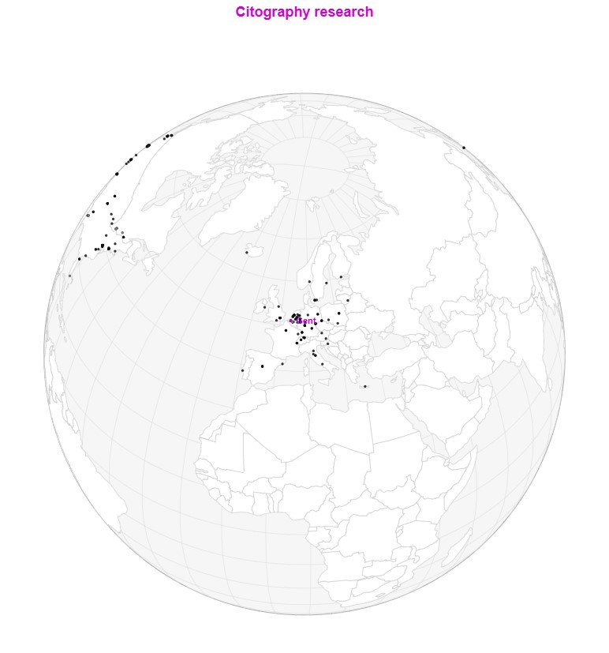
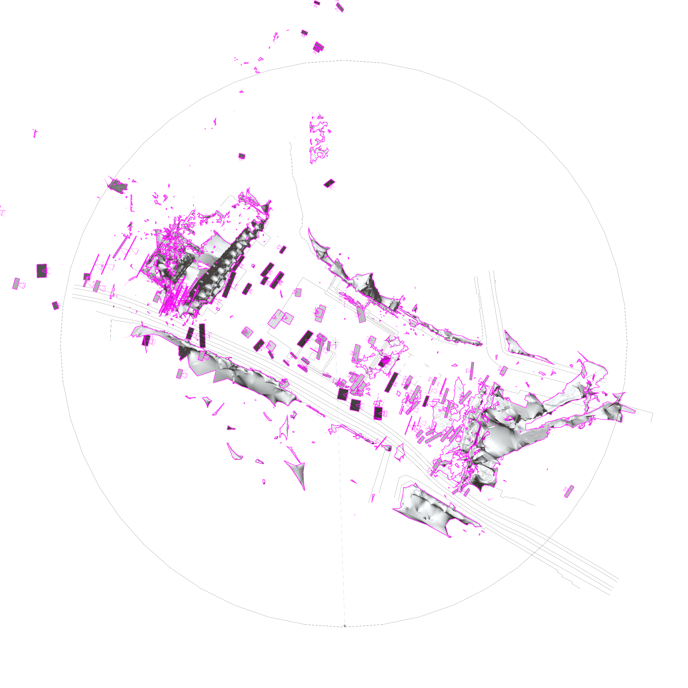
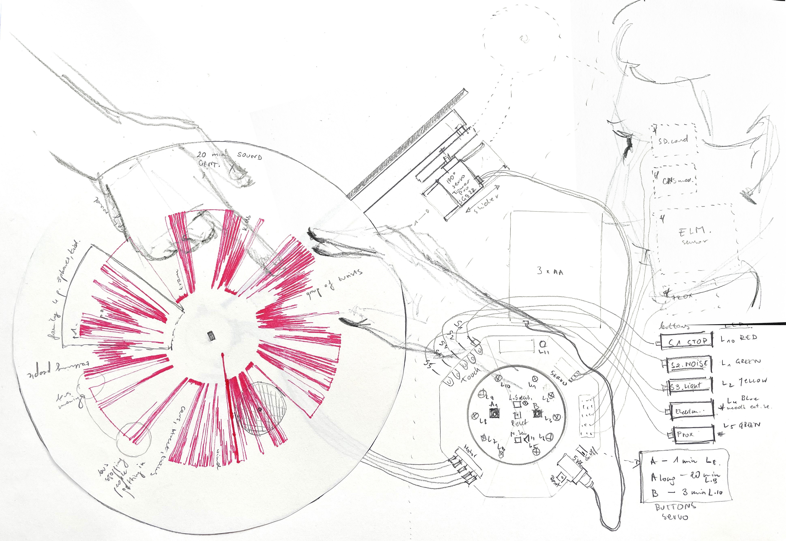
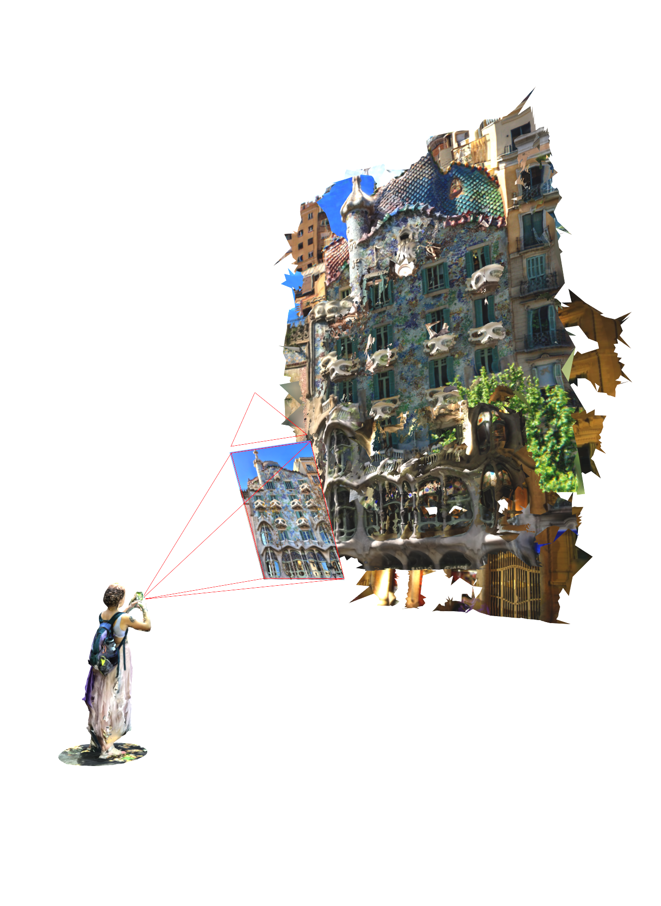

Citography Host map
website

Framing the City, Gent
plan / perspective

Citographer Toolkit
tools / sensing / modeling

Citography NYC
mapping collective experiences

Hypervisible Barcelona
image / map

Brussels Street Surveillance
mapping

Nevers Wires
with Supisara Burapachairsri, David Miller

Protest Citography - Strajk Kobiet
publication / video / fieldstation

Speculative Architecture
drawing architecture / KU Leuven

Automated Media Ecology
fieldstation